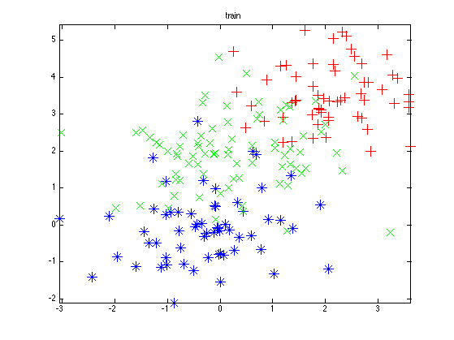
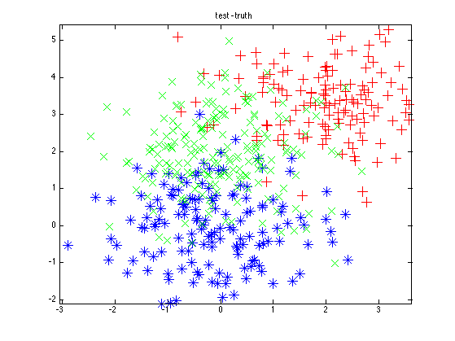
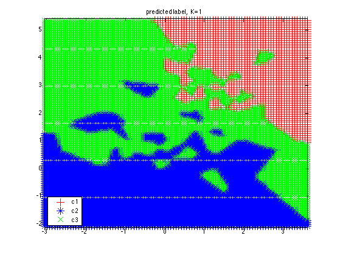
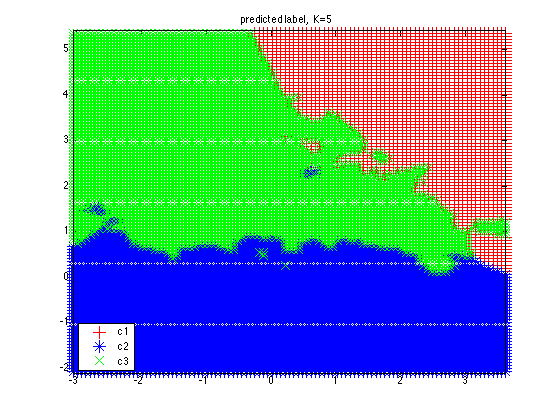
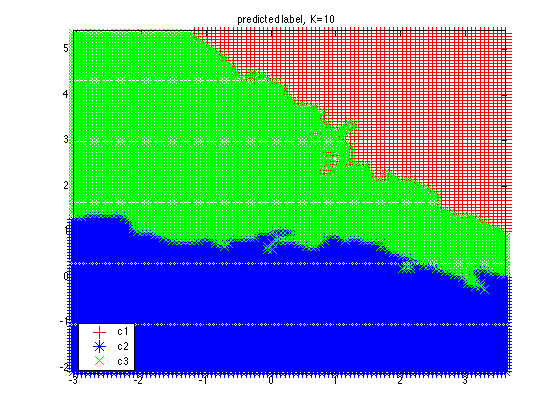
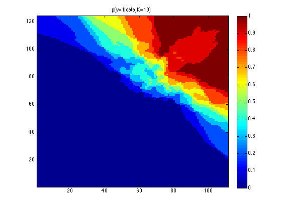
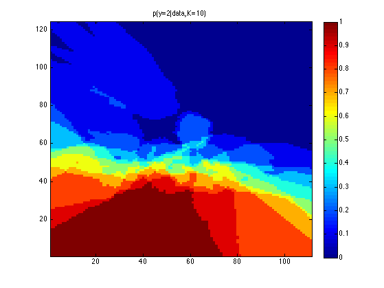
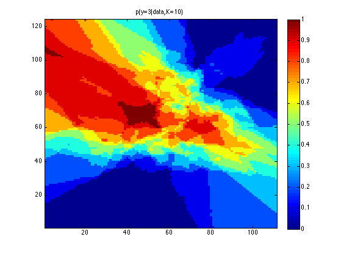
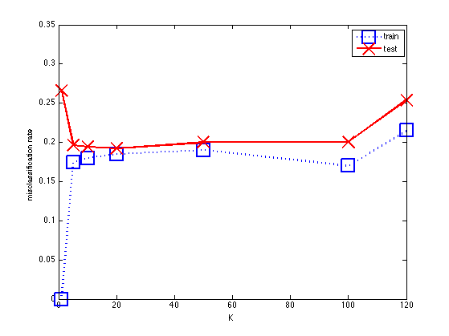
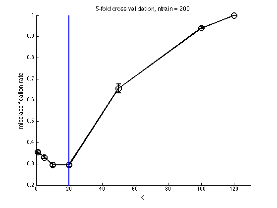

Classify using KNN
Contents
% This file is from pmtk3.googlecode.com function knnClassifyDemo()
load data
loadData('knnClassify3c');
Ntest = size(Xtest,1);
Ntrain = size(Xtrain,1);
Plot data
range = [min(Xtrain(:,1)) max(Xtrain(:,1)) min(Xtrain(:,2)) max(Xtrain(:,2))]; figure; plotLabeledData(Xtrain, ytrain) title('train') axis(range) printPmtkFigure('knnClassifyTrainData'); figure; plotLabeledData(Xtest, ytest) title('test - truth') axis(range) printPmtkFigure('knnClassifyTestData'); 
Classify and plot predictions on test data
Ks = [1 5 10]; %{ for ki=1:length(Ks) K = Ks(ki); model = knnFit(Xtrain, ytrain, K); [ypred] = knnPredict(model, Xtest); figure; plotLabeledData(Xtest, ypred); err = find(ypred(:) ~= ytest(:)); nerrors = length(err); title(sprintf('K=%d, error rate = %d/%d = %5.3f', ... K, nerrors, Ntest, nerrors/Ntest)) axis(range) % Put circles around errors hold on h=plot(Xtest(err,1), Xtest(err,2), 'ko'); set(h,'markersize',15) printPmtkFigure(sprintf('knnClassifyTestK%d', K)); end %}
Plot predicted class across a 2d grid of points
cf HTF fig 2.2
[XtestGrid, xrange, yrange] = makeGrid2d(Xtrain); for K=Ks(:)' model = knnFit(Xtrain, ytrain, K); [ypredGrid, yprobGrid] = knnPredict(model, XtestGrid); figure; plotLabeledData(XtestGrid, ypredGrid) %axis([min(x1range) max(x1range) min(x2range) max(x2range)]) axis(range) %title(sprintf('mode of predictive density, K=%d', K)) title(sprintf('predicted label, K=%d', K)) %colorbar legend('c1','c2','c3','location','southwest') printPmtkFigure(sprintf('knnClassifyPredK%d', K)) end  
Plot predictive probability across a 2d grid of points
for K=[10] model = knnFit(Xtrain, ytrain, K); [ypredGrid, yprobGrid] = knnPredict(model, XtestGrid); for c=1:3 HH = reshape(yprobGrid(:,c), [length(yrange) length(xrange)]); figure; imagesc(HH); axis xy; colorbar title(sprintf('p(y=%d|data,K=%d)', c,K)) printPmtkFigure(sprintf('knnClassifyProbC%dK%d', c, K)) end end  
Plot error vs K
Ks = [1 5 10 20 50 100 120]; for ki=1:length(Ks) K = Ks(ki); model = knnFit(Xtrain, ytrain, K); [ypred] = knnPredict(model, Xtest); err = find(ypred(:) ~= ytest(:)); nerrors = length(err); errRateTest(ki) = nerrors/Ntest; % compute error on training set [ypred] = knnPredict(model, Xtrain); err = find(ypred(:) ~= ytrain(:)); nerrors = length(err); errRateTrain(ki) = nerrors/Ntrain; end figure; plot(Ks, errRateTrain, 'bs:', Ks, errRateTest, 'rx-', 'linewidth', 2, 'markersize', 20); legend('train', 'test') xlabel('K'); ylabel('misclassification rate') printPmtkFigure('knnClassifyErrVsK')
Cross validation
for k=1:numel(Ks) K = Ks(k); fitFn = @(Xtr,ytr) knnFit(Xtr, ytr, K); predFn = @(mod, Xte) knnPredict(mod, Xte); lossFn = @(yhat, yte) mean((yhat ~= yte)); N = size(Xtrain, 1); %nfolds = N; % LOOCV nfolds = 5; % since the data is sorted left to right, we must randomize the order randomizeOrder = false; [mu(k), se(k)] = cvEstimate(fitFn, predFn, lossFn, Xtrain, ytrain, nfolds, ... 'randomizeOrder', randomizeOrder); end %{ hold on plot(Ks, mu, 'k-.*', 'linewidth', 2, 'markersize', 10) legend('train', 'test', '5-CV') set(gca, 'ylim', [0 0.6]) printPmtkFigure('knnClassifyErrVsKwithCV') %} % Plot CV in separate figure fs = 12; figure; hold on ndx = Ks; xlabel('K', 'fontsize', fs) ylabel('misclassification rate', 'fontsize', fs) errorbar(ndx, mu, se, 'ko-','linewidth', 2, 'MarkerSize', 12); title(sprintf('%d-fold cross validation, ntrain = %d', nfolds, N), 'fontsize', fs) set(gca, 'xlim', [0 130]) % draw vertical line at best value dof = 1./(Ks); if 0 idx_opt = argmin(mu); else idx_opt = oneStdErrorRule(mu, se, dof); end verticalLine(ndx(idx_opt), 'color','b', 'linewidth',2); printPmtkFigure(sprintf('knnCV'))
end %%%%%%%%%%%%% function plotLabeledData(X, y) markers = {'r+', 'b*', 'gx'}; C = max(y); for c=1:C ndx = find(y==c); h=plot(X(ndx,1), X(ndx,2), markers{c}); set(h,'markersize',12) hold on end end